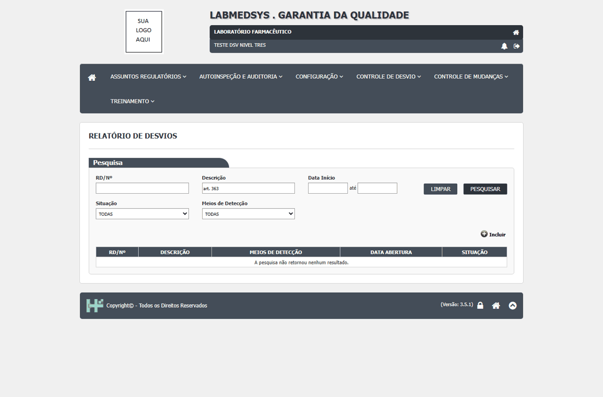
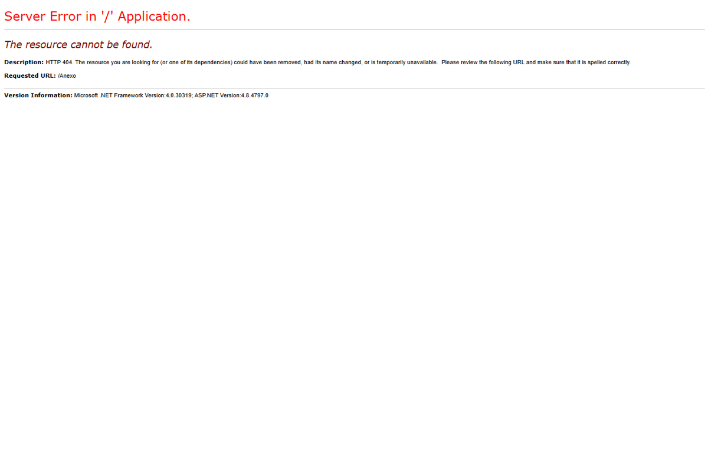
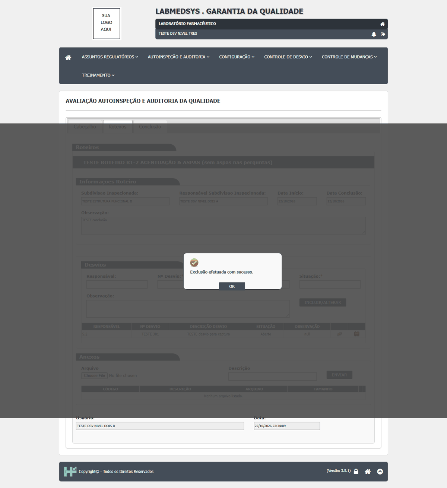
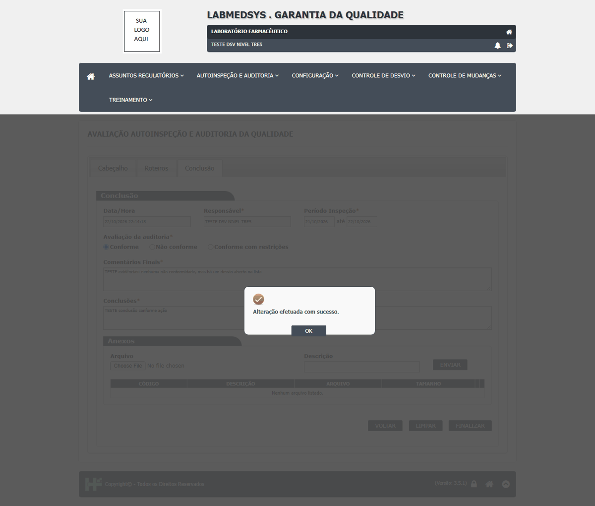

DV-GQ-099 · Auditoria finalizada como "Não conforme" não abre desvio no Controle de Desvios
Auditoria finalizada como "Não conforme" não abre desvio no Controle de Desvios.
Como reproduzir o erro, passo a passo
- Finalizar e procurar no Relatório de Desvios.
Esperado
Abrir ou vincular o desvio.
Obtido
Auditoria finalizada como "Não conforme" não abre desvio no Controle de Desvios.
Evidência (captura da tela)

DV-GQ-114 · Os anexos da avaliação e do roteiro não abrem: erro 404
Abrir qualquer anexo (da avaliação ou do roteiro) mostra uma página de erro do servidor (HTTP 404, página não encontrada). O endereço pedido não leva o prefixo da área da GQ. O anexo fica guardado, mas ninguém consegue ler.
Como reproduzir o erro, passo a passo
- Enviar um anexo na Avaliação (e outro no roteiro).
- Clicar para abrir o anexo.
Esperado
O arquivo abre ou é baixado.
Obtido
Página de erro 404; nenhum anexo pode ser lido.
Evidência (captura da tela)

DV-GQ-115 · Excluir um desvio da Avaliação apaga na hora, sem confirmação, sem justificativa e sem registro
A lixeira do desvio incluído na Avaliação mostra "Exclusão efetuada com sucesso." na hora. Não pede confirmação nem justificativa e não deixa registro no histórico da programação; o desvio some de vez.
Como reproduzir o erro, passo a passo
- Na Avaliação, incluir um desvio.
- Clicar na lixeira da linha.
- Abrir o histórico da programação.
Esperado
Confirmação, justificativa e registro no histórico (rastreabilidade).
Obtido
Exclusão imediata, sem confirmação, sem justificativa e sem rastro.
Evidência (captura da tela)

DV-GQ-097 · A Avaliação finaliza sem escolher o resultado (Conforme, Não conforme ou com restrições)
Finaliza sem escolher o resultado (Conforme, Não conforme ou com restrições).
Como reproduzir o erro, passo a passo
- Preencher evidências e conclusões, não marcar resultado, Finalizar.
Esperado
Exigir o resultado.
Obtido
Finaliza sem escolher o resultado (Conforme, Não conforme ou com restrições).
Sem captura de tela registrada para este defeito.
DV-GQ-116 · Desvio da Avaliação com descrição acima de 400 ou número acima de 100 caracteres dá erro interno
Item e número com 100 caracteres, descrição com 400 e situação com 200 gravam. Descrição com 401 ou número com 101: "Ocorreu um erro interno não esperado.". A tela não avisa o limite.
Como reproduzir o erro, passo a passo
- Incluir desvio com campos nos limites e acima deles.
Esperado
Limite no campo ou mensagem clara.
Obtido
Erro interno sem explicação.
Sem captura de tela registrada para este defeito.
DV-GQ-121 · A Avaliação finaliza "Conforme" com um desvio ainda em aberto na lista
A avaliação finaliza com o resultado Conforme e o PDF mostra "Avaliação da Auditoria: Conforme" junto do desvio aberto. Nenhuma conferência de coerência.
Como reproduzir o erro, passo a passo
- Incluir um desvio com situação Aberto.
- Finalizar a avaliação como Conforme.
Esperado
Alertar ou recusar.
Obtido
Finaliza e imprime Conforme com desvio aberto.
Evidência (captura da tela)
